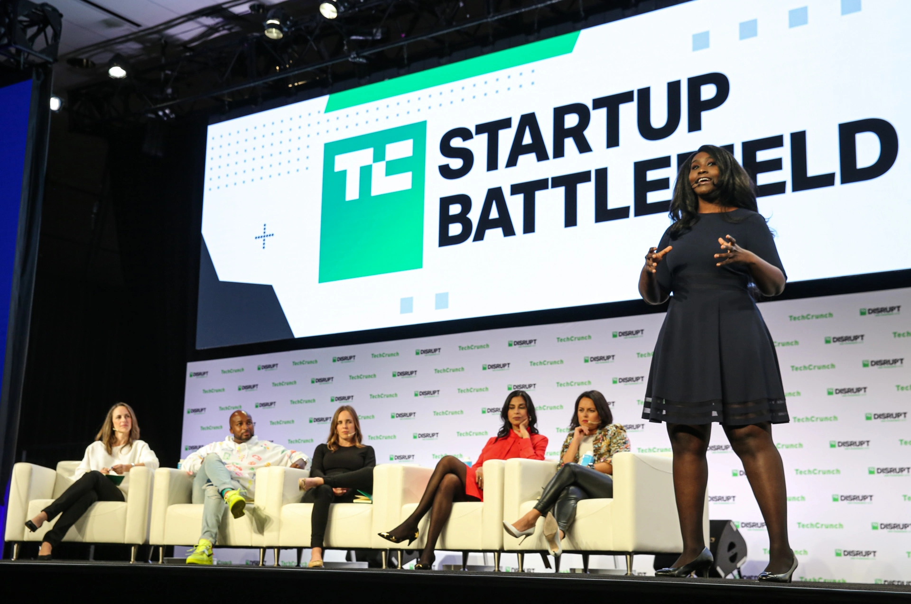
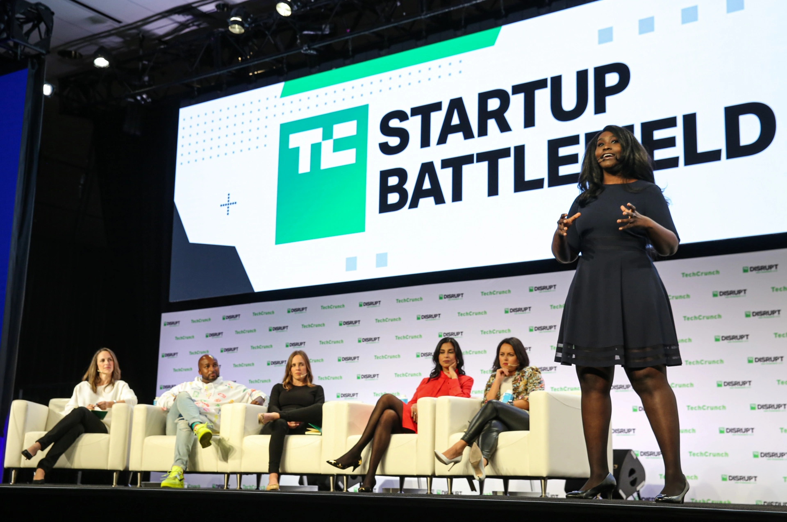

BATTLEFIELD 200
|
STARTUP BATTLEFIELD 200 |
| Techcrunch - STARTUP AND TECHNOLOGY NEWS
TechCrunch • Reporting on the business of technology, startups, venture capital funding, and Silicon Valley. Startups Read more about startup coverage that breakdown.... India Economy.Read the latest news about india on TechCrunch. Register hereRegister here for your enhancement and for ever offered internships and entrepreneurial opportunities Techcrunch+Market Analysis · Six climate tech trends to watch for in 2023 ... AppsThe app economy continues to grow, having produced a record ... Latest from techcrunch. |
  
TechCrunch is an American online newspaper focusing on high tech and startup companies. It was founded in June 2005 by Archimedes Ventures, led by partners Michael Arrington and Keith Teare. In 2010, AOL acquired the company for approximately $25 million. Wikipedia Date launched: 10 June 2005 Headquarters: San Francisco, California, United States Editor: Matthew Panzarino Owners: AOL, Yahoo Categories: News, Technology, Blog, Web 2.0 |
TechCrunch, founded on June 11, 2005, is a news website dedicated to the tech scene. We provide breaking technology news, opinions, and analysis on tech ...
Brad Feld |
Mark Suster |
Tomasz Tungz |